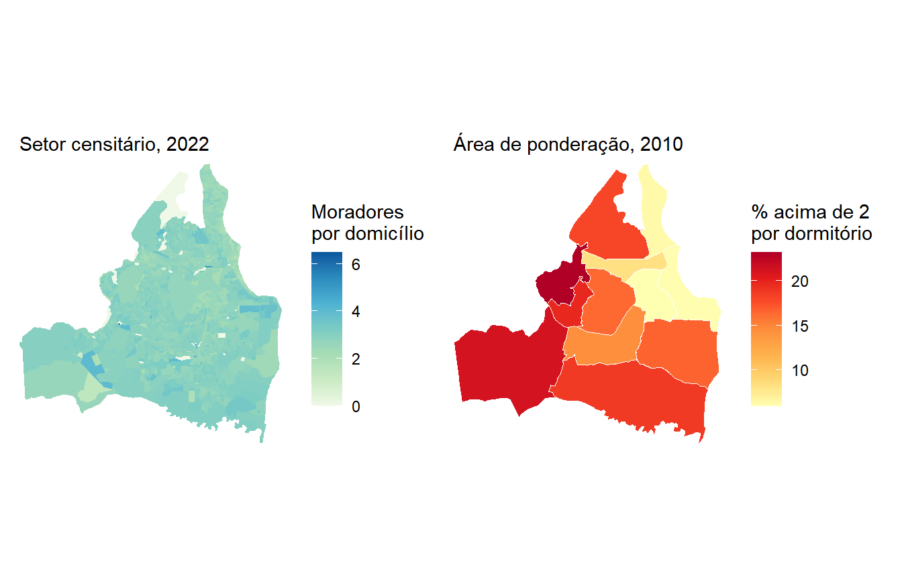

| Arquivo | Código original | Nome atribuído | Descrição |
|---|---|---|---|
| Básico | V0001 |
pop |
População total residente |
| Básico | V0003 |
dom_part |
Total de domicílios particulares (ocupados, vagos e de uso ocasional) |
| Básico | V0005 |
mor_dom |
Média de moradores em domicílios particulares ocupados |
| Básico | V0007 |
dom_ocup |
Total de domicílios particulares ocupados |
| Básico | code_type |
— | Tipo do setor, em que 1 indica Favela e Comunidade Urbana |
| Domicílio | domicilio01_V00002 |
improv |
Domicílios particulares improvisados ocupados |
13 Habitação
13.1 Introdução
O problema habitacional brasileiro costuma ser descrito por um número só, o do déficit. Falta moradia, e a política pública existe para produzi-la. Essa leitura é correta e é incompleta, porque em quase toda cidade brasileira convivem duas carências de sinais opostos. De um lado há gente demais em domicílios de menos. De outro há domicílio vazio, fechado, à espera de comprador ou de veraneio.
Este capítulo mede as duas coisas e depois pergunta uma terceira, que é para onde a cidade está crescendo. As três perguntas exigem três produtos diferentes do Censo, e nenhum deles responde sozinho. Os agregados por setor censitário informam quantos domicílios existem, quantos estão ocupados e quantas pessoas moram em cada um. Os microdados da amostra informam quantas pessoas dormem em cada dormitório, que é a medida de adensamento que interessa e que os agregados não trazem. O CNEFE informa onde havia obra em andamento no momento da coleta, e é a única fonte censitária que enxerga o estoque futuro.
Combinar três produtos significa conviver com três unidades espaciais e dois anos de referência distintos. Os agregados vêm por setor censitário em 2022, os microdados por área de ponderação em 2010, e o CNEFE vem em pontos de endereço em 2022. Este é o capítulo em que o problema da escolha da unidade espacial aparece com toda a força, e a maneira honesta de lidar com ele é objeto de uma seção inteira.
O município escolhido é João Pessoa (PB), capital litorânea cujo estoque de domicílios vazios é grande o bastante para tornar visível o segundo lado do problema.
13.2 Os dados do capítulo
Começamos pelos agregados. Do arquivo Básico vêm a população, os totais de domicílios e a média de moradores. Do arquivo Domicílio vem a contagem de domicílios improvisados. A Tabela 13.1 descreve as variáveis, e vale reter desde já que três delas são totais de domicílios com definições próximas e não intercambiáveis.
Obtemos primeiro o código do município e, em seguida, lemos os dois arquivos, filtrando por João Pessoa antes do collect().
joao_pessoa <- lookup_muni(name_muni = "João Pessoa", year = 2022)$code_muni
joao_pessoa[1] 2507507Do arquivo Básico pedimos também name_neighborhood e code_type, que serão usados adiante para agregar os resultados e para separar os setores classificados como Favela e Comunidade Urbana.
sc_basico <- read_tracts(dataset = "Basico", year = 2022) |>
filter(code_muni == joao_pessoa) |>
select(code_tract, name_neighborhood, code_type, V0001, V0003, V0005, V0007) |>
collect()
sc_dom <- read_tracts(dataset = "Domicilio", year = 2022) |>
filter(code_muni == joao_pessoa) |>
select(code_tract, domicilio01_V00002) |>
collect()
jp_sc <- sc_basico |>
left_join(sc_dom, by = "code_tract") |>
rename(
pop = V0001,
dom_part = V0003,
mor_dom = V0005,
dom_ocup = V0007,
improv = domicilio01_V00002
)
nrow(jp_sc)[1] 1778Precisamos ainda da geometria dos setores, que virá do geobr e será unida à tabela pela coluna code_tract.
jp_geo <- read_census_tract(
code_tract = joao_pessoa,
year = 2022,
simplified = FALSE
) |>
select(code_tract) |>
left_join(jp_sc, by = "code_tract")Antes de calcular qualquer coisa, uma verificação de coerência. Os três totais de domicílios do arquivo Básico têm de guardar entre si a relação que suas definições anunciam, com o total de particulares maior que o de particulares ocupados.
jp_sc |>
summarise(
populacao = sum(pop, na.rm = TRUE),
dom_particular = sum(dom_part, na.rm = TRUE),
dom_ocupado = sum(dom_ocup, na.rm = TRUE),
diferenca = sum(dom_part, na.rm = TRUE) - sum(dom_ocup, na.rm = TRUE)
) populacao dom_particular dom_ocupado diferenca
1 833932 377504 296743 80761A diferença entre os dois totais passa de oitenta mil domicílios, o que já antecipa o assunto de uma das seções seguintes. Antes dela, porém, tratemos do indicador que costuma ser o primeiro a ser procurado por quem estuda precariedade habitacional, e que quase sempre decepciona.
13.3 Domicílios particulares improvisados
O IBGE classifica como domicílio particular improvisado o local que não foi construído para servir de moradia e que, no momento da coleta, estava sendo usado como tal. São lojas, galpões, prédios em construção, embarcações e situações análogas, além das pessoas em situação de rua abrigadas em estruturas fixas. A definição é estrita e o efeito prático é que a variável capta muito menos do que o nome sugere.
O denominador correto aqui é dom_ocup, e não dom_part. O total de domicílios particulares ocupados é a soma dos permanentes ocupados com os improvisados ocupados, ou seja, é exatamente o universo em que o improvisado está contido. Usar o total de particulares colocaria no denominador domicílios vazios, que por definição não podem ser improvisados ocupados.
jp_sc |>
summarise(
improvisados = sum(improv, na.rm = TRUE),
dom_ocupados = sum(dom_ocup, na.rm = TRUE),
percentual = 100 * sum(improv, na.rm = TRUE) / sum(dom_ocup, na.rm = TRUE),
setores_com_valor_suprimido = sum(is.na(improv))
) improvisados dom_ocupados percentual setores_com_valor_suprimido
1 243 296743 0.08188904 148São pouco mais de duas centenas de domicílios improvisados em uma cidade de quase trezentos mil domicílios ocupados, menos de um décimo de um por cento. O número é tão baixo que um mapa por setor seria quase todo zero, e por isso não o produzimos.
Esse resultado precisa ser lido com cuidado, e não como boa notícia. Domicílio improvisado não é sinônimo de moradia precária. A imensa maioria da precariedade habitacional brasileira acontece em domicílios permanentes, construídos para morar, e que são precários por outras razões, como material das paredes, adensamento, falta de saneamento ou insegurança da posse. Nada disso aparece nesta variável. Quem procurar o déficit habitacional aqui não vai encontrá-lo.
O que a variável permite, ainda assim, é uma comparação. Os agregados classificam cada setor pelo campo code_type, e o valor 1 identifica os setores de Favela e Comunidade Urbana, categoria que em 2022 passou a ser pesquisada com o mesmo instrumento aplicado ao resto da cidade, como visto no Capítulo 11.
jp_sc |>
mutate(
tipo = ifelse(code_type == 1, "Favela e Comunidade Urbana", "Demais setores")
) |>
group_by(tipo) |>
summarise(
setores = n(),
populacao = sum(pop, na.rm = TRUE),
dom_ocupados = sum(dom_ocup, na.rm = TRUE),
improvisados = sum(improv, na.rm = TRUE)
) |>
mutate(perc_improvisados = 100 * improvisados / dom_ocupados) |>
knitr::kable(
digits = 3,
format.args = list(big.mark = ".", decimal.mark = ",")
)| tipo | setores | populacao | dom_ocupados | improvisados | perc_improvisados |
|---|---|---|---|---|---|
| Demais setores | 1.448 | 723.564 | 258.694 | 133 | 0,051 |
| Favela e Comunidade Urbana | 330 | 110.368 | 38.049 | 110 | 0,289 |
Os setores de favela e comunidade urbana são menos de um quinto dos setores do município e concentram quase metade dos domicílios improvisados. A concentração é real e vale registrar. O volume absoluto, porém, continua pequeno demais para sustentar um diagnóstico habitacional, o que reforça o ponto anterior.
Guardemos a divisão entre favela e demais setores, porque ela reaparecerá com resultados mais expressivos na próxima seção.
13.4 Domicílios particulares não ocupados
Nenhuma variável dos Agregados de 2022 informa diretamente quantos domicílios estão vagos. O que existe são os dois totais que já lemos, e a diferença entre eles.
\[ \text{não ocupados} = \underbrace{V0003}_{\text{particulares}} - \underbrace{V0007}_{\text{particulares ocupados}} \]
Essa diferença não é o total de domicílios vagos. Segundo a própria definição das variáveis no dicionário, o total de particulares soma quatro categorias, os permanentes ocupados, os permanentes vagos, os permanentes de uso ocasional e os improvisados ocupados. Ao subtrair os ocupados, restam duas categorias somadas, os vagos e os de uso ocasional. As duas descrevem situações bem diferentes, porque um imóvel vago está fora de uso e um imóvel de uso ocasional é a casa de praia que fica fechada durante o ano. Como não há como separá-las nos agregados, o indicador precisa ser nomeado pelo que ele de fato mede.
jp_geo <- jp_geo |>
mutate(
nao_ocup = dom_part - dom_ocup,
perc_nao_ocup = 100 * nao_ocup / dom_part
)
jp_geo |>
st_drop_geometry() |>
summarise(
nao_ocupados = sum(nao_ocup, na.rm = TRUE),
percentual = 100 * sum(nao_ocup, na.rm = TRUE) / sum(dom_part, na.rm = TRUE)
)# A tibble: 1 × 2
nao_ocupados percentual
<dbl> <dbl>
1 80761 21.4Mais de um em cada cinco domicílios particulares de João Pessoa não tinha morador em 2022. É uma proporção alta, e o mapa mostra que ela está longe de se distribuir por igual.
ggplot(jp_geo) +
geom_sf(aes(fill = perc_nao_ocup), color = NA) +
scale_fill_distiller(palette = "OrRd", direction = 1,
name = "% não\nocupados",
na.value = "gray90") +
coord_sf(expand = FALSE) +
theme_minimal() +
theme(axis.text = element_blank(), axis.ticks = element_blank(),
panel.grid = element_blank())
Para nomear as áreas, agregamos por bairro. Aqui cabe uma observação prática que continua a do Capítulo 12. Em Goiânia, a coluna name_neighborhood vinha inteiramente vazia e tivemos de recorrer ao subdistrito. Em João Pessoa acontece o contrário, com os bairros preenchidos e o município inteiro formando um único distrito e um único subdistrito. Não existe um recorte intermediário que sirva para todos os municípios, e a verificação precisa ser feita caso a caso.
jp_sc |>
summarise(
bairros_distintos = n_distinct(name_neighborhood),
setores_sem_bairro = sum(is.na(name_neighborhood))
) bairros_distintos setores_sem_bairro
1 65 14Com 65 bairros preenchidos, a agregação é viável. Restringimos a tabela aos bairros com pelo menos mil domicílios particulares, para que proporções calculadas sobre bases muito pequenas não dominem os extremos.
bairros <- jp_geo |>
st_drop_geometry() |>
filter(!is.na(name_neighborhood)) |>
group_by(name_neighborhood) |>
summarise(
pop = sum(pop, na.rm = TRUE),
dom_part = sum(dom_part, na.rm = TRUE),
dom_ocup = sum(dom_ocup, na.rm = TRUE)
) |>
filter(dom_part >= 1000) |>
mutate(perc_nao_ocup = 100 * (dom_part - dom_ocup) / dom_part)
bind_rows(
bairros |> slice_max(perc_nao_ocup, n = 8),
bairros |> slice_min(perc_nao_ocup, n = 5)
) |>
select(name_neighborhood, dom_part, perc_nao_ocup) |>
knitr::kable(
col.names = c("Bairro", "Domicílios particulares", "% não ocupados"),
digits = 1,
format.args = list(big.mark = ".", decimal.mark = ",")
)| Bairro | Domicílios particulares | % não ocupados |
|---|---|---|
| Cabo Branco | 6.831 | 48,7 |
| Varadouro | 1.546 | 40,7 |
| Tambaú | 6.280 | 35,5 |
| Muçumagro | 6.859 | 32,5 |
| Centro | 1.483 | 32,4 |
| Bessa | 9.386 | 31,1 |
| Água Fria | 4.011 | 30,9 |
| Jardim Oceania | 11.154 | 27,1 |
| São José | 2.399 | 12,1 |
| Treze de Maio | 3.129 | 12,6 |
| Padre Zé | 2.354 | 14,1 |
| Alto do Céu | 7.554 | 14,4 |
| Costa e Silva | 2.676 | 14,5 |
A tabela revela dois fenômenos distintos misturados no mesmo indicador, e é justamente por isso que ele não pode ser chamado de vacância. No topo aparecem bairros da orla, onde a proporção de domicílios sem morador chega a quase metade do estoque, padrão compatível com segunda residência e uso de veraneio. Também no topo aparecem o Centro e o Varadouro, que ficam do lado oposto da cidade e cuja história é outra, a de esvaziamento de área central consolidada. Somar os dois casos em um único número é aceitável desde que a leitura os separe.
Podemos verificar a hipótese da orla usando as coordenadas dos bairros. Em João Pessoa, o litoral é o limite leste do município, de modo que quanto maior a longitude do centroide, mais próximo do mar está o bairro.
bairros_geo <- read_neighborhood(year = 2022) |>
filter(code_muni == joao_pessoa)
coords <- st_coordinates(st_centroid(st_geometry(bairros_geo)))
bairros_geo |>
st_drop_geometry() |>
select(name_neighborhood) |>
mutate(longitude = coords[, 1]) |>
inner_join(bairros, by = "name_neighborhood") |>
slice_max(longitude, n = 6) |>
select(name_neighborhood, longitude, perc_nao_ocup) |>
knitr::kable(
col.names = c("Bairro", "Longitude do centroide", "% não ocupados"),
digits = c(0, 3, 1),
format.args = list(decimal.mark = ",")
)| Bairro | Longitude do centroide | % não ocupados |
|---|---|---|
| Costa do Sol | -34,809 | 26,9 |
| Portal do Sol | -34,813 | 24,9 |
| Cabo Branco | -34,820 | 48,7 |
| Tambaú | -34,826 | 35,5 |
| Altiplano Cabo Branco | -34,829 | 22,9 |
| Paratibe | -34,829 | 23,7 |
Todos os seis bairros mais a leste do município têm proporção de domicílios não ocupados acima da média municipal de 21,4%, e dois deles, Cabo Branco e Tambaú, ocupam as primeiras posições da tabela anterior. A associação entre proximidade do mar e domicílio sem morador se sustenta, embora nem todo bairro a leste seja de frente para a praia, o que explica por que alguns aparecem apenas ligeiramente acima da média.
Resta a comparação com os setores de favela e comunidade urbana, que produz o resultado mais contraintuitivo do capítulo.
jp_geo |>
st_drop_geometry() |>
mutate(
tipo = ifelse(code_type == 1, "Favela e Comunidade Urbana", "Demais setores")
) |>
group_by(tipo) |>
summarise(
dom_part = sum(dom_part, na.rm = TRUE),
dom_ocup = sum(dom_ocup, na.rm = TRUE)
) |>
mutate(perc_nao_ocup = 100 * (dom_part - dom_ocup) / dom_part) |>
knitr::kable(
digits = 1,
format.args = list(big.mark = ".", decimal.mark = ",")
)| tipo | dom_part | dom_ocup | perc_nao_ocup |
|---|---|---|---|
| Demais setores | 331.369 | 258.694 | 21,9 |
| Favela e Comunidade Urbana | 46.135 | 38.049 | 17,5 |
A proporção de domicílios sem morador é menor dentro das favelas e comunidades urbanas do que no restante da cidade. O resultado surpreende quem espera que o indicador meça abandono, e deixa de surpreender assim que se lembra do que ele mede. Domicílio de uso ocasional pressupõe que alguém tenha uma segunda casa, e domicílio vago pressupõe um mercado com estoque à espera de comprador ou inquilino. Nenhuma das duas coisas é característica de assentamento precário, onde o domicílio existente tende a estar ocupado.
Contamos até aqui quantos domicílios existem e quantos estão vazios. Falta a pergunta oposta, que é quantas pessoas ocupam os que estão cheios.
13.5 Quantas pessoas por domicílio
O arquivo Básico traz a variável V0005, que é a média de moradores em domicílios particulares ocupados de cada setor. Ela merece um cuidado que as demais variáveis dos agregados não exigem, porque já chega calculada como média. Não se relativiza uma média, não se soma média de setores diferentes e, ao agregar para bairro, é preciso reconstruir o quociente a partir dos totais, e não tirar a média das médias.
Comecemos observando a distribuição da variável entre os setores do município.
summary(jp_geo$mor_dom) Min. 1st Qu. Median Mean 3rd Qu. Max.
0.00 2.60 2.80 2.75 3.00 6.50 Os quartis estão muito próximos uns dos outros, o que sugere pouca variação entre setores. O mapa confirma essa impressão.
ggplot(jp_geo) +
geom_sf(aes(fill = mor_dom), color = NA) +
scale_fill_distiller(palette = "GnBu", direction = 1,
name = "Moradores por\ndomicílio",
na.value = "gray90") +
coord_sf(expand = FALSE) +
theme_minimal() +
theme(axis.text = element_blank(), axis.ticks = element_blank(),
panel.grid = element_blank())
A variação entre setores é modesta, com a maior parte da cidade entre dois e meio e três moradores por domicílio. Essa compressão é esperada, porque o tamanho médio das famílias brasileiras caiu muito e ficou parecido entre classes de renda. É também a razão pela qual esse indicador, sozinho, diz pouco sobre adensamento.
O motivo é simples. Três pessoas em um domicílio de três dormitórios e três pessoas em um domicílio de um dormitório produzem exatamente a mesma média de moradores, e são situações habitacionais completamente diferentes. O que distingue as duas é o número de dormitórios, e essa informação não existe nos agregados.
13.6 Quantas pessoas por dormitório
O quesito sobre cômodos usados como dormitório pertence ao Questionário da Amostra, e por isso a resposta está nos microdados. O Censo 2010 divulga inclusive a razão já calculada, na variável V6204, que é a densidade de moradores por dormitório do domicílio.
Como no Capítulo 12, a mudança de fonte traz mudança de unidade espacial e de ano. Os microdados de 2022 ainda não foram divulgados, conforme discutido no Capítulo 8, de modo que trabalhamos com 2010. O quesito continua existindo em 2022, no item 3.04 do Questionário da Amostra, então o indicador voltará a ser calculável quando os microdados forem publicados.
ap_jp <- read_weighting_area(
code_weighting = joao_pessoa,
year = 2010,
simplified = FALSE
)
ap_cods <- ap_jp |>
pull(code_weighting)
length(ap_cods)São apenas doze áreas de ponderação para todo o município, contra os 1.778 setores censitários usados nas seções anteriores. Guardemos esse contraste, porque ele é o assunto da seção seguinte.
A leitura dos microdados de domicílios segue o fluxo do Capítulo 8. Além da variável de interesse, pedimos o identificador do domicílio, o peso amostral e a área de ponderação, exigidos pelo plano amostral.
cols_dom <- c(
"V0300", # Identificador do domicílio
"V0010", # Peso amostral calibrado
"code_weighting", # Área de ponderação
"V0204", # Número de cômodos servindo de dormitório
"V6204" # Densidade de moradores por dormitório
)
md_jp <- read_households(year = 2010, columns = cols_dom) |>
filter(code_weighting %in% ap_cods) |>
collect()
nrow(md_jp)[1] 10677No caso dos domicílios, o plano amostral é uma amostragem estratificada, sem conglomeração, porque o domicílio é a própria unidade sorteada. Declaramos os estratos, os pesos e o total expandido por área para a correção de população finita.
dom_ap <- md_jp |>
group_by(code_weighting) |>
summarize(n_dom = sum(V0010))
md_jp <- md_jp |>
left_join(dom_ap, by = join_by(code_weighting))
pa_jp <- md_jp |>
as_survey_design(
strata = code_weighting,
weights = V0010,
fpc = n_dom
)Antes de calcular, precisamos olhar os valores ausentes, porque neste caso eles não vêm de sigilo e sim de uma característica real do domicílio.
md_jp |>
summarise(
registros = n(),
sem_dormitorio = sum(is.na(V0204)),
sem_densidade = sum(is.na(V6204))
)# A tibble: 1 × 3
registros sem_dormitorio sem_densidade
<int> <int> <int>
1 10677 194 194Os registros sem informação de dormitório são domicílios que não têm nenhum cômodo servindo permanentemente de dormitório, situação típica de moradias de um único cômodo. Como a densidade é uma divisão pelo número de dormitórios, ela fica indefinida nesses casos e chega como ausente. Isso significa que o indicador que vamos calcular exclui justamente os domicílios em situação mais precária, o que subestima o adensamento. É uma limitação que precisa ser declarada, e não contornada silenciosamente com na.rm = TRUE.
Feita a ressalva, calculamos as estatísticas municipais. Além da média e da mediana, incluímos a proporção de domicílios com mais de dois moradores por dormitório, corte frequentemente usado como referência de adensamento excessivo na literatura de habitação e que adotamos aqui como escolha explícita, e não como norma oficial.
pa_jp |>
summarise(
media = survey_mean(V6204, na.rm = TRUE, vartype = "ci"),
mediana = survey_median(V6204, na.rm = TRUE, vartype = "ci"),
acima_de_dois = survey_mean(V6204 > 2, na.rm = TRUE, vartype = "ci")
) |>
knitr::kable(digits = 3, format.args = list(decimal.mark = ","))| media | media_low | media_upp | mediana | mediana_low | mediana_upp | acima_de_dois | acima_de_dois_low | acima_de_dois_upp |
|---|---|---|---|---|---|---|---|---|
| 1,67 | 1,655 | 1,686 | 1,5 | 1,5 | 1,7 | 0,145 | 0,139 | 0,152 |
A média municipal fica em torno de um vírgula sete moradores por dormitório, e cerca de um em cada sete domicílios tinha mais de dois moradores por dormitório em 2010. O mapa por área de ponderação mostra onde esses domicílios se concentravam.
dens_ap <- pa_jp |>
group_by(code_weighting) |>
summarize(acima_de_dois = survey_mean(V6204 > 2, na.rm = TRUE))
ap_jp |>
left_join(dens_ap, by = join_by(code_weighting)) |>
ggplot() +
geom_sf(aes(fill = 100 * acima_de_dois), color = "white", linewidth = 0.3) +
scale_fill_distiller(palette = "YlOrRd", direction = 1,
name = "% acima de\n2 por dormitório",
na.value = "gray90") +
coord_sf(expand = FALSE) +
theme_minimal() +
theme(axis.text = element_blank(), axis.ticks = element_blank(),
panel.grid = element_blank())
A amplitude entre as áreas de ponderação é grande, muito maior do que a observada na média de moradores por domicílio da seção anterior. É a confirmação de que o adensamento é a dimensão que discrimina o território, e que a média de moradores não a captura.
13.7 O confronto de escalas
Temos agora dois indicadores de adensamento, obtidos de fontes diferentes, em anos diferentes e em unidades espaciais diferentes. A tentação é combiná-los em um único mapa ou em um único número. Não faremos isso, e a razão merece ser explicitada porque o erro é comum.
| Aspecto | Média de moradores | Moradores por dormitório |
|---|---|---|
| Fonte | Agregados, universo | Microdados da amostra |
| Ano | 2022 | 2010 |
| Unidade espacial | Setor censitário | Área de ponderação |
| Nº de unidades | 1.778 | 12 |
| Natureza do valor | Valor do universo | Estimativa com erro amostral |
São cinco incompatibilidades acumuladas. Interpolar um dos indicadores para a unidade do outro, como fizemos no Capítulo 7 com a interpolação dasimétrica, resolveria apenas a terceira linha da tabela e deixaria as outras quatro intactas. Um valor de 2010 continuaria sendo de 2010 depois de interpolado.
Há três saídas possíveis, que são subir todos os indicadores ao recorte mais grosso, interpolar para uma unidade comum ou manter os dois separados. A saída honesta aqui é a terceira. Mantemos os dois mapas separados e lemos o padrão espacial, não o valor. A pergunta que se responde é se as áreas que concentravam adensamento em 2010 são as mesmas que hoje têm domicílios mais cheios, e a resposta é qualitativa por construção.
mapa_setor <- ggplot(jp_geo) +
geom_sf(aes(fill = mor_dom), color = NA) +
scale_fill_distiller(palette = "GnBu", direction = 1,
name = "Moradores\npor domicílio",
na.value = "gray90") +
coord_sf(expand = FALSE) +
labs(subtitle = "Setor censitário, 2022") +
theme_minimal() +
theme(axis.text = element_blank(), axis.ticks = element_blank(),
panel.grid = element_blank())
mapa_ap <- ap_jp |>
left_join(dens_ap, by = join_by(code_weighting)) |>
ggplot() +
geom_sf(aes(fill = 100 * acima_de_dois), color = "white", linewidth = 0.3) +
scale_fill_distiller(palette = "YlOrRd", direction = 1,
name = "% acima de 2\npor dormitório",
na.value = "gray90") +
coord_sf(expand = FALSE) +
labs(subtitle = "Área de ponderação, 2010") +
theme_minimal() +
theme(axis.text = element_blank(), axis.ticks = element_blank(),
panel.grid = element_blank())
mapa_setor + mapa_ap
Os dois mapas apontam para regiões coerentes entre si, com as áreas de maior adensamento em 2010 recobrindo setores que em 2022 mantêm médias de moradores acima do restante da cidade. Isso é o máximo que se pode afirmar, e já é bastante para um diagnóstico.
Descrito o estoque existente, resta olhar para o que estava sendo construído.
13.8 Para onde a cidade está crescendo
O CNEFE é o único produto do Censo que registra edificações em construção. A espécie de código 7 identifica esses endereços, e dois campos adicionais os qualificam. O COD_INDICADOR_FINALIDADE_CONST informa a destinação planejada, e o COD_INDICADOR_CONST_ENDERECO informa quantas unidades estão sendo construídas naquele endereço. Ambos foram apresentados no Capítulo 10 e é aqui que os usamos pela primeira vez em análise.
Começamos lendo o CNEFE do município como objeto espacial.
jp_cnefe <- read_cnefe(
code_muni = joao_pessoa,
cache = TRUE,
output = "sf"
)
nrow(jp_cnefe)[1] 426733Vale uma verificação que dá confiança no que virá. O número de registros de espécie 1, os domicílios particulares, deve bater com o total de domicílios particulares do arquivo Básico, já que ambos descrevem o mesmo universo recenseado.
jp_cnefe |>
st_drop_geometry() |>
summarise(
dom_particulares_cnefe = sum(COD_ESPECIE == 1),
dom_particulares_agreg = sum(jp_sc$dom_part, na.rm = TRUE)
) dom_particulares_cnefe dom_particulares_agreg
1 377504 377504Os dois totais coincidem exatamente, o que confirma que estamos diante do mesmo recenseamento visto por dois produtos diferentes.
Filtramos agora as edificações em construção com destinação residencial. As categorias 1 e 3 do campo de finalidade correspondem, respectivamente, a residencial e misto, e são as que interessam para expansão habitacional.
construcoes <- jp_cnefe |>
filter(COD_ESPECIE == 7,
COD_INDICADOR_FINALIDADE_CONST %in% c(1, 3))
construcoes |>
st_drop_geometry() |>
count(COD_INDICADOR_CONST_ENDERECO) |>
mutate(
unidades = case_when(
COD_INDICADOR_CONST_ENDERECO == 1 ~ "Única",
COD_INDICADOR_CONST_ENDERECO == 2 ~ "Múltipla, até dez unidades",
COD_INDICADOR_CONST_ENDERECO == 3 ~ "Múltipla, mais de dez unidades",
COD_INDICADOR_CONST_ENDERECO == 4 ~ "Quantidade desconhecida"
),
perc = 100 * n / sum(n)
) |>
select(unidades, n, perc) |>
knitr::kable(
col.names = c("Unidades em construção no endereço", "Endereços", "%"),
digits = 1,
format.args = list(big.mark = ".", decimal.mark = ",")
)| Unidades em construção no endereço | Endereços | % |
|---|---|---|
| Única | 3.527 | 76,2 |
| Múltipla, até dez unidades | 556 | 12,0 |
| Múltipla, mais de dez unidades | 468 | 10,1 |
| Quantidade desconhecida | 79 | 1,7 |
Esse campo é o que nos permite distinguir, ainda que por aproximação, dois modos de crescer. Um endereço com uma única unidade em construção corresponde tipicamente a expansão horizontal, casa a casa. Um endereço com mais de dez unidades corresponde tipicamente a verticalização, ou seja, a um edifício. A aproximação é grosseira e precisa ser declarada como tal, porque um condomínio horizontal fechado também registra muitas unidades em um único endereço.
AvisoDuas ressalvas antes de chamar isso de expansão
A primeira é que a espécie 7 do CNEFE é definida como edificação em construção ou reforma. Não há campo que separe obra nova de obra de reforma, o que significa que parte dos endereços aqui contados não acrescenta nenhuma unidade ao estoque. O indicador, portanto, superestima a expansão em áreas consolidadas, onde a reforma é mais provável.
A segunda é que o CNEFE é um retrato do momento da coleta. Uma obra que começou depois não aparece, e uma que terminou antes já foi recenseada como domicílio. O que se mede é o canteiro aberto em 2022, e não o crescimento acumulado de um período.
Resta agregar os pontos por bairro. E aqui é preciso resistir a um atalho que parece óbvio e que produz resultado errado. O CNEFE traz a coluna COD_SETOR, e a tentação é usá-la para juntar os pontos aos setores dos agregados. Os dois códigos não são compatíveis.
setores_cnefe <- jp_cnefe |>
st_drop_geometry() |>
distinct(COD_SETOR) |>
pull(COD_SETOR)
setores_agregados <- as.character(jp_sc$code_tract)
tibble(
medida = c("Caracteres no código do CNEFE",
"Caracteres no código dos agregados",
"Setores distintos no CNEFE",
"Setores nos agregados",
"Códigos coincidentes"),
valor = c(unique(nchar(setores_cnefe)),
unique(nchar(setores_agregados)),
length(setores_cnefe),
length(setores_agregados),
length(intersect(substr(setores_cnefe, 1, 15), setores_agregados)))
) |>
knitr::kable(col.names = c("Medida", "Valor"),
format.args = list(big.mark = "."))Warning in prettyNum(.Internal(format(x, trim, digits, nsmall, width, 3L, :
'big.mark' e 'decimal.mark' são ambos '.', o que pode ser confuso| Medida | Valor |
|---|---|
| Caracteres no código do CNEFE | 16 |
| Caracteres no código dos agregados | 15 |
| Setores distintos no CNEFE | 1.635 |
| Setores nos agregados | 1.778 |
| Códigos coincidentes | 1.449 |
Os códigos do CNEFE têm um caractere a mais que os dos agregados. Mesmo descartando esse sufixo, os dois conjuntos não coincidem, já que dos 1.635 setores presentes no CNEFE apenas 1.449 encontram correspondência entre os 1.778 dos agregados. Juntar por código descartaria silenciosamente centenas de setores, e o pior é que a operação não produziria erro algum.
A solução é usar aquilo que o CNEFE tem de mais confiável, que são as coordenadas. Cada registro traz latitude e longitude, e uma junção espacial atribui a cada ponto o polígono que o contém, sem depender de código nenhum. A operação é a st_join() apresentada no Capítulo 5.
construcoes_bairro <- construcoes |>
select(COD_INDICADOR_CONST_ENDERECO) |>
st_join(bairros_geo |> select(name_neighborhood), join = st_within) |>
st_drop_geometry()
construcoes_bairro |>
summarise(
pontos = n(),
sem_bairro = sum(is.na(name_neighborhood))
) pontos sem_bairro
1 4631 30Poucas dezenas de pontos ficam sem bairro, o que corresponde a construções situadas fora dos polígonos de bairro divulgados. Com a atribuição feita, produzimos a contagem por bairro, separando as construções de unidade única das de mais de dez unidades.
expansao <- construcoes_bairro |>
filter(!is.na(name_neighborhood)) |>
group_by(name_neighborhood) |>
summarise(
total = n(),
horizontal = sum(COD_INDICADOR_CONST_ENDERECO == 1),
vertical = sum(COD_INDICADOR_CONST_ENDERECO == 3)
)
expansao |>
slice_max(total, n = 10) |>
knitr::kable(
col.names = c("Bairro", "Total", "Unidade única", "Mais de dez unidades"),
format.args = list(big.mark = ".")
)Warning in prettyNum(.Internal(format(x, trim, digits, nsmall, width, 3L, :
'big.mark' e 'decimal.mark' são ambos '.', o que pode ser confuso
Warning in prettyNum(.Internal(format(x, trim, digits, nsmall, width, 3L, :
'big.mark' e 'decimal.mark' são ambos '.', o que pode ser confuso
Warning in prettyNum(.Internal(format(x, trim, digits, nsmall, width, 3L, :
'big.mark' e 'decimal.mark' são ambos '.', o que pode ser confuso| Bairro | Total | Unidade única | Mais de dez unidades |
|---|---|---|---|
| Gramame | 507 | 368 | 59 |
| Mangabeira | 361 | 285 | 1 |
| Costa do Sol | 259 | 250 | 0 |
| Muçumagro | 249 | 135 | 96 |
| Portal do Sol | 221 | 206 | 2 |
| Cristo Redentor | 207 | 105 | 80 |
| Mumbaba | 194 | 152 | 0 |
| Alto do Mateus | 191 | 182 | 0 |
| Paratibe | 143 | 126 | 2 |
| Manaíra | 125 | 96 | 16 |
Os bairros com mais canteiros abertos não são os mesmos que lideram em verticalização, e a tabela seguinte deixa isso claro.
expansao |>
slice_max(vertical, n = 8) |>
mutate(perc_vertical = 100 * vertical / total) |>
knitr::kable(
col.names = c("Bairro", "Total", "Unidade única", "Mais de dez unidades", "% vertical"),
digits = 1,
format.args = list(big.mark = ".", decimal.mark = ",")
)| Bairro | Total | Unidade única | Mais de dez unidades | % vertical |
|---|---|---|---|---|
| Muçumagro | 249 | 135 | 96 | 38,6 |
| Cristo Redentor | 207 | 105 | 80 | 38,6 |
| Gramame | 507 | 368 | 59 | 11,6 |
| Ernesto Geisel | 105 | 56 | 34 | 32,4 |
| Jardim Oceania | 88 | 31 | 33 | 37,5 |
| Bessa | 105 | 49 | 18 | 17,1 |
| Jardim Cidade Universitária | 73 | 31 | 18 | 24,7 |
| Bancários | 79 | 37 | 16 | 20,3 |
| Manaíra | 125 | 96 | 16 | 12,8 |
O contraste é o achado da seção. Há bairros em que a construção é abundante e quase toda horizontal, com centenas de endereços de unidade única, e há bairros em que o número de canteiros é menor mas a proporção de edifícios é muito maior. São dois modos de produzir cidade, com consequências distintas sobre densidade, infraestrutura e preço da terra.
Para ver o padrão espacialmente, mapeamos as duas contagens por bairro.
expansao_geo <- bairros_geo |>
select(name_neighborhood) |>
left_join(expansao, by = "name_neighborhood")
mapa_horizontal <- ggplot(expansao_geo) +
geom_sf(aes(fill = horizontal), color = "white", linewidth = 0.2) +
scale_fill_distiller(palette = "Greens", direction = 1,
name = "Endereços",
na.value = "gray90") +
coord_sf(expand = FALSE) +
labs(subtitle = "Unidade única") +
theme_minimal() +
theme(axis.text = element_blank(), axis.ticks = element_blank(),
panel.grid = element_blank())
mapa_vertical <- ggplot(expansao_geo) +
geom_sf(aes(fill = vertical), color = "white", linewidth = 0.2) +
scale_fill_distiller(palette = "Purples", direction = 1,
name = "Endereços",
na.value = "gray90") +
coord_sf(expand = FALSE) +
labs(subtitle = "Mais de dez unidades") +
theme_minimal() +
theme(axis.text = element_blank(), axis.ticks = element_blank(),
panel.grid = element_blank())
mapa_horizontal + mapa_vertical
Os dois mapas descrevem frentes de expansão que ocupam partes diferentes do município. A expansão horizontal se espalha pelas bordas, e a verticalização se concentra em manchas menores e mais próximas das áreas já urbanizadas.
13.9 Precariedade, vazio e expansão
O capítulo produziu três leituras do estoque habitacional de João Pessoa, e vale reuni-las.
O primeiro resultado é que a precariedade medida pelos improvisados praticamente não existe nos números, o que diz mais sobre o alcance da variável do que sobre a cidade. O segundo é que mais de um quinto dos domicílios particulares não tinha morador, com dois padrões sobrepostos, o da orla e o do centro esvaziado. O terceiro é que o adensamento, medido pelos moradores por dormitório, se distribui de forma bem mais desigual do que a média de moradores sugere.
A relação entre o vazio e a expansão merece uma última observação. Alguns bairros aparecem simultaneamente entre os de maior proporção de domicílios não ocupados e entre os de maior número de edifícios em construção. Uma explicação plausível é que parte do estoque não ocupado seja recente e ainda não vendido ou não habitado, o que colocaria o indicador de vacância e o de expansão medindo faces do mesmo processo. Os dados deste capítulo sustentam a coincidência, mas não a explicação, que exigiria informação sobre data de conclusão das obras, ausente no Censo.
Descrito o domicílio, a pergunta seguinte é o que chega até ele. É dela que trata o próximo capítulo.
13.10 Exercícios
Recalcule a proporção de domicílios improvisados usando
dom_partno lugar dedom_ocupno denominador. A diferença no resultado é pequena, mas o indicador passa a ser conceitualmente incorreto. Explique por quê, retomando as definições da Seção 13.3.O indicador de domicílios não ocupados soma vagos e de uso ocasional. Consulte a documentação dos Agregados do Censo 2010 e verifique se aquela edição permitia separar as duas categorias. Em caso positivo, calcule as duas separadamente para João Pessoa em 2010 e discuta o que se perdeu com a mudança.
Reproduza a junção espacial das construções do CNEFE para outro município à sua escolha, usando os setores censitários do
geobrcomo polígonos em vez dos bairros. Compare o número de pontos sem polígono atribuído nas duas versões e explique a diferença.Na Seção 13.6, os domicílios sem nenhum cômodo servindo de dormitório saem do cálculo por terem densidade indefinida. Conte quantos são em João Pessoa, estime que proporção do total representam e proponha uma forma de apresentar o indicador de adensamento que torne essa exclusão visível ao leitor.